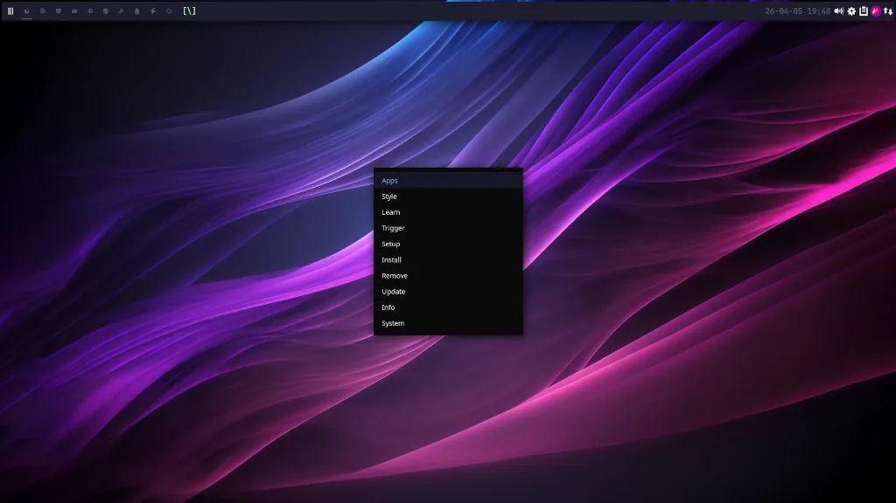
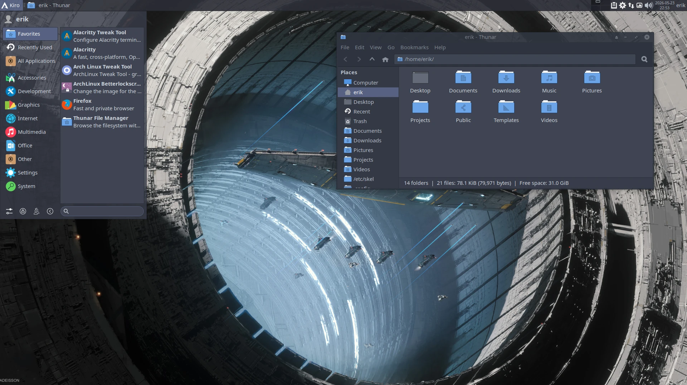
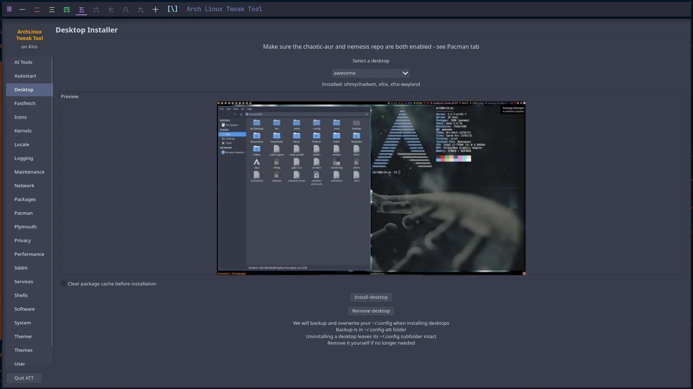
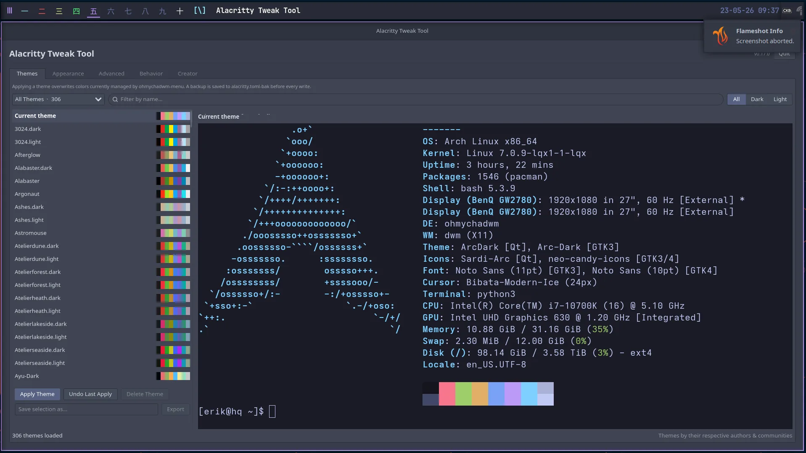

The nemesis_repo
for Arch & Kiro.
Erik Dubois' pre-built Arch Linux package repository — the ArchLinux Tweak Tool,
window-manager configs, Arc themes and Sardi icons. You don't have to run Kiro to use it:
add it to /etc/pacman.conf on any Arch install and you're done.
PGP-signed · trusted via kiro-keyring · hosted on GitHub Pages
Add the repo
Use it on any Arch system
Add nemesis_repo to /etc/pacman.conf and refresh.
The package list lives on
github.com/erikdubois/nemesis_repo.
1. Install it (one command)
$ curl -sL bit.ly/nemesis-repo | sudo bash2. Refresh pacman
$ sudo pacman -SyyuRecommended pacman.conf entry
# /etc/pacman.conf
[nemesis_repo]
Include = /etc/pacman.d/kiro-mirrorlistkiro-keyring (trusts the Kiro
signing key) and kiro-mirrorlist (ships
/etc/pacman.d/kiro-mirrorlist, the server list the
Include points at). Packages are PGP-signed, so
nemesis_repo inherits the global
SigLevel = Required DatabaseOptional. Keeping the mirror in a package
means a server change is a kiro-mirrorlist update, not a hand-edit on
every machine.
Packages
What's inside
379 pre-built packages, refreshed regularly. The headliners are the tweak tools and the desktop work; the bulk is themes and icon sets you can mix and match.
Tweak & system tools
archlinux-tweak-tool-gtk4, alacritty-tweak-tool, archlinux-logout-gtk4, edu-system-files — the GTK4 control centre and friends.
Desktops & window managers
ohmychadwm, edu-chadwm, edu-qtile, edu-i3, edu-bspwm, edu-awesome, edu-leftwm, edu-polybar, edu-rofi, edu-xfce.
Arc GTK themes
arcolinux-arc-* — the full colour-accented Arc theme family, from aqua to crimson to cornflower-blue.
Sardi & Neo-Candy icons
sardi-* flexible/ghost/flat variants, neo-candy-icons, papirus-dark-tela — coordinated icon sets.
Utilities
flameshot-git, blueberry, pamac-aur, libpamac-aur, ckb-next, hardcode-fixer — handpicked everyday extras.
Chaotic mirror bits
chaotic-keyring, chaotic-mirrorlist, pacman-hook-kernel-install — the plumbing that keeps things current.
Gallery
What Kiro looks like
A glance at the desktops and tools you can run with software from the nemesis repo.






Watch
How the repo works
A walkthrough of adding nemesis_repo and what it gives you.